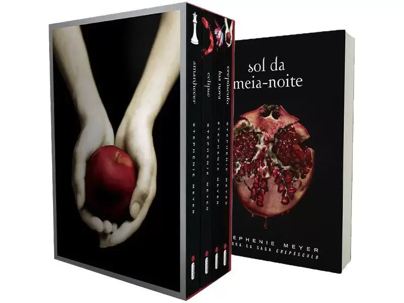

Confira abaixo informações sobre o livro Crépusculo:
Selecione a imagem acima para ser direcionado ao site de compras
Crepúsculo poderia ser uma história comum, não fosse um elemento irresistível: o objeto da paixão da protagonista é um vampiro. Assim, soma-se à paixão um perigo sobrenatural temperado com muito suspense, e o resultado é uma leitura de tirar o fôlego. Um romance repleto das angústias e incertezas da juventude - o arrebatamento, a atração, a ansiedade que antecede cada palavra, cada gesto, e todos os medos. Isabella Swan chega à nublada e chuvosa cidadezinha de Forks - último lugar onde gostaria de viver. Tenta se adaptar à vida provinciana na qual aparentemente todos se conhecem, lidar com sua constrangedora falta de coordenação motora e se habituar a morar com um pai com quem nunca conviveu. Em seu destino está Edward Cullen. Lindo, perfeito, misterioso ele é à primeira vista, hostil à presença de Bella - o que provoca nela uma inquietação desconcertante. Ela se apaixona. Ele, no melhor estilo "amor proibido", alerta: Sou um risco para você. Ela é uma garota incomum. Ele é um vampiro. Ela precisa aprender a controlar seu corpo quando ele a toca. Ele, a controlar sua sede pelo sangue dela. Em meio a descobertas e sobressaltos, Edward é, sim, perigoso: um perigo que qualquer mulher escolheria correr. Nesse universo fantasioso, os personagens construídos por Stephenie Meyer - humanos ou não - se mostram de tal forma familiares em seus dilemas e em seu comportamento que o sobrenatural parece real. Meyer torna perfeitamente plausível - e irresistível - a paixão de uma garota de 17 anos por um vampiro encantador.